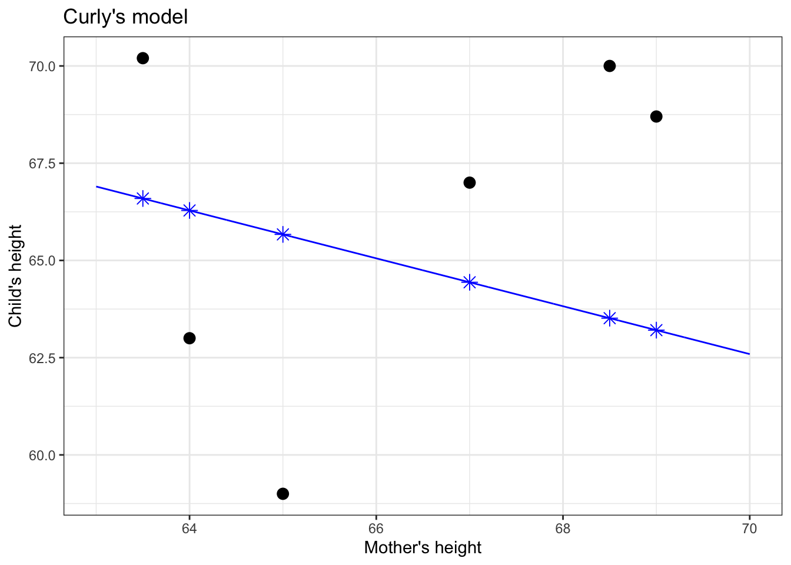
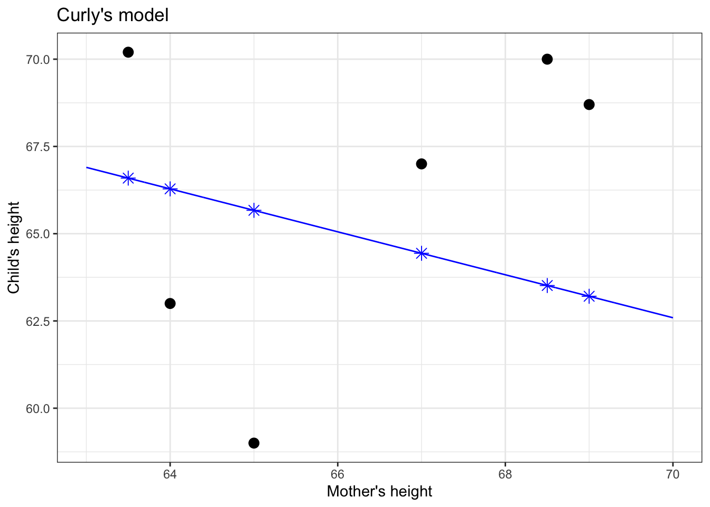

Chapter 5 Model values
It’s now time to talk a bit about the way that statistical models are constructed. To do this, imagine that we have a classroom full of students, each of whom is given data in the form of the graphs of the previous chapter and asked to draw a straight-line function relating the explanatory variable to the response variable. Naturally, some students’ models will be better than others. How can we determine which model is the best?
5.1 Model fitting: A contest between candidate models
To illustrate, let’s take a small data set and look at two models that students might draw. (Figure 5.1)


Figure 5.1: Two candidates for straight-line models of a handful of data points.
Who has drawn the better model: Linus or Curly?
The instructor takes out a blue pen and draws a * for every data point, as in Figure 5.2. The star marks the output of the model when given the input (mother’s height) for that point. The position of each * on the vertical axis marks the model value for that data point.
 

Figure 5.2: Applying the model function (blue line) to the values of the explanatory variable (mother’s height, on the horizontal axis) produces the model values, marked with a \(\star\)..
Think of the model values as a kind of stand-in for the response variable, one that stays strictly in line with the model.
Now to determine whether Linus or Curly has the better model. The instructor takes out her red pen to mark the “error,” as in Figure 5.3. The error (marked as a red line) is the difference between the actual value of the response variable (vertical position of black dot) and the model value (blue \(\star\)).
Figure 5.3: The model error for each data point (shown as red line segments) is the distance between the response value (vertical position of black dot) and the corresponding model value (blue \(\star\)).
The magnitude of the error is the length of the red line. In statistics, model candidates are graded according to the sum of square errorsk, as in Figure 5.4. (There is a good reason for this, analogous to the Pythagorean Theorem for the sides of a right triangle, but that needn’t concern us here.)
So Linus’s and Curly’s models are graded according to the total amount of red ink used in drawing the squares.
Figure 5.4: Each candidate model is given a grade that is the sum of the square errors, represented here by the total amount of red ink.

The less red ink, the better. Linus wins.
The process of constructing a statistical model reflects the contest just described between Linus and Curly and the judgement made by the teacher. But rather than looking at just two candidates, grades are assigned to a very large set of candidate models. Once the explanatory and response variables have been selected, and a shape for the function chosen (here, a straight line), the computer tries out all the possibilities and picks the one that gives the least error between the model values and the actual response values.
In practice, for straight-line models (and more general forms, called “linear models”), there are equations that can be solved to find the best model, so there’s no need for the computer to try out lots of candidates. But the result is no different than if it had been found by trial and error.
5.2 Variance of model values
There is something important to notice about the model values for the winning model:
Model values will have a lower variance than the response variable.
We’ll use the symbol \(v_m\) to stand for the variance of the model values.
To illustrate this, let’s look at a couple of models from the previous chapter. In each, you can see that the response values (black dots) are spread out, while the model values stay in toward the center of data. This is a natural consequence of our using central models, that is, models where the function has roughly equal numbers of data points above it and below it.

Figure 5.5: Model values (blue dots) for a straight-line model of child’s height with mother’s height as the explanatory variable. Response variance: 12.84; Model value variance: 0.52
Figure 5.6: Model values for the probability that a pea has a flower colored white, with pollen shape as the explanatory variable. Response variance: 0.17; Model value variance: 0.000091
Figure 5.7: Model values for a model of sex, with mother’s height as the explanatory variable. Response variance: 0.25; Model value variance: 0.14